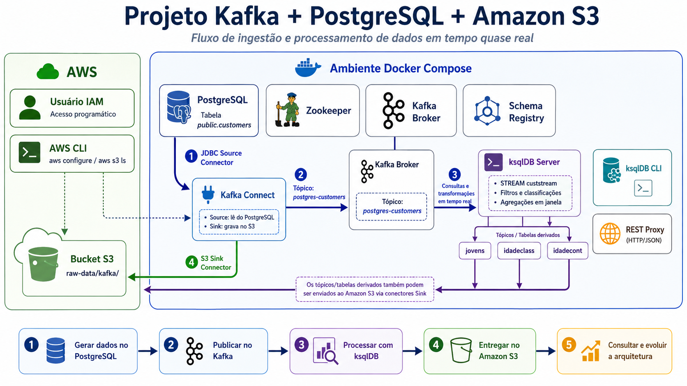

Leonardo Basilio
Senior Data Engineer based in Fortaleza/CE, Brazil, with 8+ years of experience building data pipelines and analytics products end-to-end — from ingestion and transformation to data modeling, BI delivery and production support.
My current focus is data streaming and event-driven architectures with Apache Kafka: Change Data Capture (CDC) with Debezium, event publishing to Kafka topics and cross-database replication with Kafka Connect. I modernized a SQL Server monolith into an event-driven architecture (CDC → Debezium → Kafka → Kafka Connect), decoupling production environments, enabling microservices and achieving 80–90% performance gains across applications.
I also have a solid background in batch and cloud data engineering on Azure (Data Factory, Synapse Analytics, Databricks, Delta Lake and the Medallion architecture). At Bem Promotora, I migrated legacy DW/SSIS workloads to a Medallion Lakehouse, cutting processing time by ~70% and daily cost by ~53%.
Core stack: SQL, Python, PySpark, Apache Kafka, Debezium, Kafka Connect, Databricks, Delta Lake, Azure Synapse and Amazon S3 — complemented by BI delivery in Power BI, Tableau and Apache Superset. I design dimensional models, data marts and semantic layers with a strong focus on data quality, lineage and governance, acting as a technical reference and mentor for the data team.
</>
CDC Environment
Application of a CDC (Change Data Capture) Environment using Debezium, Kafka, Kafka UI, Spark, Zookeeper, and SQL

ENEM
Snowflake data warehouse on the ENEM microdata: PySpark, SQL Server and Apache Superset dashboards.

Kafka + Amazon S3 Integration
End-to-end real-time data pipeline: PostgreSQL → Kafka Connect → Apache Kafka → ksqlDB → Amazon S3.
ENEM — Microdata Data Warehouse
Analysis of the ENEM microdata (Brazil's national high-school exam, published by INEP), focused on participant demographics, exam locations and final results. The public files from 2019 to 2022 are read and cleaned with PySpark in Jupyter Notebooks, loaded into a SQL Server data warehouse and consumed through Apache Superset dashboards — the whole environment provisioned with Docker Compose.
Solution architecture
Dimensional model (snowflake)
The FATO_ENEM_AGREGATE fact table holds the number of candidates and the average scores per area (natural sciences, humanities, languages and mathematics), linked to the dimensions of gender, municipality (which in turn joins DIME_UF), marital status, ethnicity, nationality, schooling status, school, monthly income range and age range.

Technologies
- PySpark
- Python
- Jupyter
- SQL Server
- Snowflake modeling
- Apache Superset
- Docker Compose
{xp}
I started my professional life as an intern with data at a credit recovery company. I have been in the field for over 8 years.
I am passionate about this area, always seeking to learn about new technologies and develop open-source projects to contribute to the community.
-
Bem Promotora 02/2022 until now
Senior Data Engineer. Event-driven architectures with CDC, Debezium, Apache Kafka and Kafka Connect; Medallion Lakehouse on Azure Synapse, Data Factory and PySpark; BI delivery in Power BI and Apache Superset.
-
Lider Assessoria 02/2021 to 02/2022
Data Specialist. Working with Power BI, Alteryx, Tableau, and SQL
-
CRC - Central de Recuperação de Créditos 09/2017 to 02/2021
Data Analyst. Working with Tableau, Alteryx, Pentaho, and SQL
.edu
Undergraduate
Data Science
ESTÁCIO-MG
Completed Jan/2024
Computer Science
IFCE
Ongoing
Technical in Informatics
IFCE
Completed Jun/17
Postgraduate
Data Engineering & Architecture with AI
XP Educação
Completed
MBA in Business Intelligence
Completed
Technologies
- Azure Synapse
- Databricks
- Amazon S3
- AWS
- Apache Kafka
- Kafka Connect
- ksqlDB
- Debezium
- Spark
- Scala
- SQL Server
- PowerBI
- Apache Superset
- Tableau
- Alteryx
- DBT
- DeltaLake
- Azure Data Factory
- Apache Flink
- PostgreSQL
- Python
- Docker
- Kubernetes
- Terraform
-
Applied Data Science Bootcamp
Alura
Development of an applied data analysis study with Python, Pandas and Matplotlib.
-
Azure Data Factory Immersion
Microsoft
Specialized training for Microsoft's cloud architecture, focusing on Data Factory.
-
Certifications
- Microsoft DP-900 — Azure Data Fundamentals
- Microsoft DP-600 — Fabric Analytics Engineer
- Duke University — Spark, Hadoop and Snowflake for Data Engineering
-
Languages
Portuguese (native) · English (advanced) · Spanish (basic)